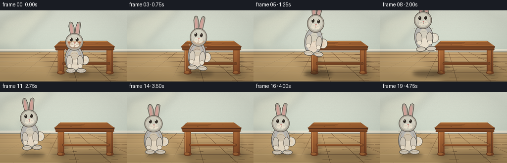
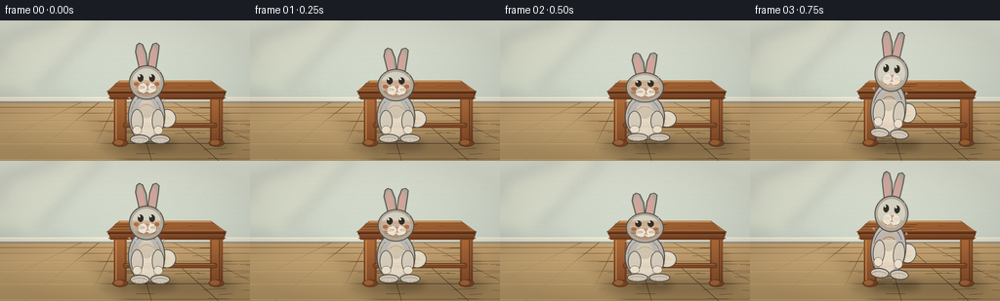
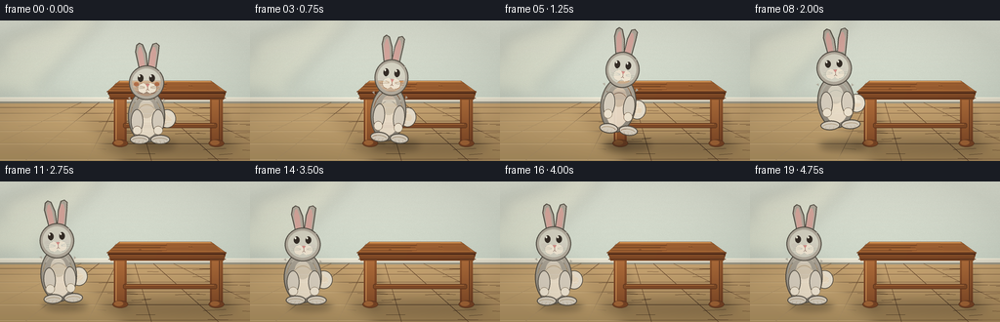
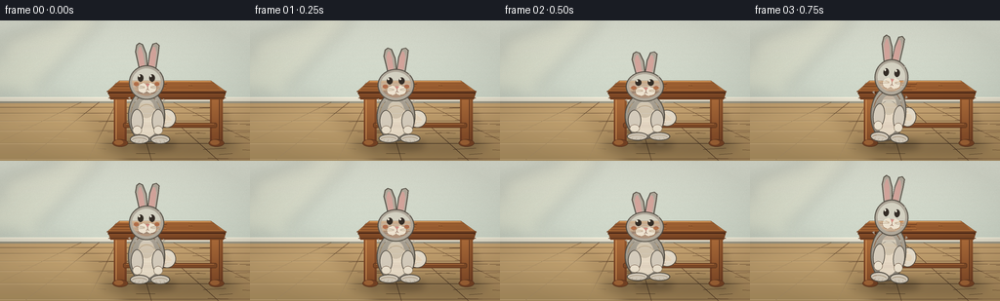

CODING AGENTS AS PIXEL WORLD MODELS
traex/DeepSeek-V4.1-Flash · dynamic_spatial_relationship_0019
点击播放 · 原生 RGB 像素
逐轮保存的候选
回放视频、检查图与代码变化。
每份候选均可单独播放。实际图片检查记录在下方工具轨迹中。
候选 01播放与检查图
点击播放 · 原生 RGB 像素


展开代码变化
--- 上一保存版本
+++ 本次保存版本
@@ -0,0 +1,475 @@
+from __future__ import annotations
+
+import math
+from pathlib import Path
+
+import numpy as np
+from PIL import Image, ImageChops, ImageDraw, ImageFilter
+
+import artifact_io
+
+
+W, H = 256, 144
+S = 4
+SW, SH = W * S, H * S
+GROUND_Y = 126.0
+
+
+def sc(value: float) -> int:
+ return int(round(value * S))
+
+
+def box(values) -> tuple[int, int, int, int]:
+ return tuple(sc(v) for v in values)
+
+
+def points(values) -> list[tuple[int, int]]:
+ return [(sc(x), sc(y)) for x, y in values]
+
+
+def vertical_gradient(size, top, bottom):
+ width, height = size
+ ramp = np.linspace(0.0, 1.0, height, dtype=np.float32)[:, None, None]
+ top = np.asarray(top, dtype=np.float32)
+ bottom = np.asarray(bottom, dtype=np.float32)
+ data = top[None, None, :] * (1.0 - ramp) + bottom[None, None, :] * ramp
+ data = np.repeat(data, width, axis=1)
+ return Image.fromarray(np.clip(data, 0, 255).astype(np.uint8), "RGB")
+
+
+def alpha_composite(base: Image.Image, layer: Image.Image, box_xy) -> None:
+ x, y = box_xy
+ base.alpha_composite(layer, (sc(x), sc(y)))
+
+
+def draw_soft_shadow(scene, shape: str, bounds, blur=4, opacity=70, offset=(4, 2)):
+ layer = Image.new("RGBA", scene.size, (0, 0, 0, 0))
+ draw = ImageDraw.Draw(layer)
+ b = box((bounds[0] + offset[0], bounds[1] + offset[1],
+ bounds[2] + offset[0], bounds[3] + offset[1]))
+ if shape == "ellipse":
+ draw.ellipse(b, fill=(45, 35, 25, opacity))
+ else:
+ draw.polygon(b, fill=(45, 35, 25, opacity))
+ layer = layer.filter(ImageFilter.GaussianBlur(sc(blur)))
+ scene.alpha_composite(layer)
+
+
+def make_background() -> Image.Image:
+ scene = vertical_gradient((SW, SH), (220, 226, 216), (190, 204, 194)).convert("RGBA")
+ draw = ImageDraw.Draw(scene, "RGBA")
+
+ # A soft window-shaped wash keeps the wall from feeling flat.
+ sun = Image.new("RGBA", scene.size, (0, 0, 0, 0))
+ sd = ImageDraw.Draw(sun)
+ sd.polygon(points([(2, 18), (65, 0), (104, 0), (34, 74), (0, 75), (0, 42)]),
+ fill=(255, 245, 208, 37))
+ sd.polygon(points([(24, 83), (72, 83), (62, 74), (19, 74)]),
+ fill=(255, 247, 221, 20))
+ sun = sun.filter(ImageFilter.GaussianBlur(sc(7)))
+ scene.alpha_composite(sun)
+
+ # Fine plaster grain, kept low contrast at the final resolution.
+ rng = np.random.default_rng(19)
+ grain = rng.normal(0.0, 3.2, (SH, SW, 1)).repeat(3, axis=2)
+ base = np.asarray(scene.convert("RGB"), dtype=np.float32) + grain
+ scene = Image.fromarray(np.clip(base, 0, 255).astype(np.uint8), "RGB").convert("RGBA")
+ draw = ImageDraw.Draw(scene, "RGBA")
+
+ # Baseboard and its narrow shadow.
+ draw.rectangle(box((0, 79, 256, 86)), fill=(225, 222, 208, 255))
+ draw.line(points([(0, 79), (256, 79)]), fill=(247, 244, 228, 255), width=sc(0.8))
+ draw.rectangle(box((0, 83, 256, 87)), fill=(152, 150, 135, 95))
+ draw.line(points([(0, 86), (256, 86)]), fill=(92, 86, 72, 65), width=sc(0.7))
+
+ # Honey-colored floor with perspective boards.
+ floor_top, floor_bottom = 85.0, 144.0
+ for y in range(sc(floor_top), SH):
+ t = (y / S - floor_top) / (144.0 - floor_top)
+ c = (
+ int(196 - 36 * t),
+ int(163 - 31 * t),
+ int(116 - 28 * t),
+ )
+ draw.line((0, y, SW, y), fill=(*c, 255), width=1)
+
+ # Broad, low-contrast planks.
+ plank_edges = [89, 95, 103, 113, 126, 142]
+ for y in plank_edges:
+ draw.line(points([(0, y), (256, y)]), fill=(102, 74, 48, 50), width=sc(0.55))
+ draw.line(points([(0, y + 0.55), (256, y + 0.55)]),
+ fill=(243, 210, 158, 38), width=sc(0.35))
+
+ # Converging seams suggest depth without adding visual clutter.
+ vanish = (131.0, 83.0)
+ for near_x in (-40, 25, 89, 155, 224, 298):
+ far_x = vanish[0] + (near_x - vanish[0]) * 0.28
+ draw.line(points([(far_x, 84), (near_x, 144)]),
+ fill=(98, 68, 44, 40), width=sc(0.5))
+
+ # Sparse wood grain strokes.
+ grain_rng = np.random.default_rng(4)
+ for _ in range(34):
+ x0 = grain_rng.uniform(0, 256)
+ y0 = grain_rng.uniform(87, 142)
+ length = grain_rng.uniform(8, 32)
+ bend = grain_rng.uniform(-1.2, 1.2)
+ draw.line(points([(x0, y0), (x0 + length, y0 + bend)]),
+ fill=(83, 54, 33, grain_rng.integers(15, 33)), width=sc(0.35))
+
+ # Light from the upper left falls across the floor.
+ glow = Image.new("RGBA", scene.size, (0, 0, 0, 0))
+ gd = ImageDraw.Draw(glow)
+ gd.polygon(points([(0, 91), (77, 85), (135, 144), (0, 144)]),
+ fill=(255, 233, 177, 30))
+ glow = glow.filter(ImageFilter.GaussianBlur(sc(8)))
+ scene.alpha_composite(glow)
+ return scene
+
+
+def wood_gradient(size, top, bottom):
+ return vertical_gradient(size, top, bottom)
+
+
+def paste_masked_gradient(scene, mask_image, bounds, top, bottom):
+ x0, y0, x1, y1 = box(bounds)
+ width, height = x1 - x0, y1 - y0
+ if width <= 0 or height <= 0:
+ return
+ grad = wood_gradient((width, height), top, bottom).convert("RGBA")
+ mask = mask_image.crop((x0, y0, x1, y1))
+ scene.paste(grad, (x0, y0), mask)
+
+
+def make_table_mask(bounds, rounded=True):
+ mask = Image.new("L", (SW, SH), 0)
+ md = ImageDraw.Draw(mask)
+ x0, y0, x1, y1 = box(bounds)
+ if rounded:
+ md.rounded_rectangle((x0, y0, x1, y1), radius=sc(1.8), fill=255)
+ else:
+ md.rectangle((x0, y0, x1, y1), fill=255)
+ return mask
+
+
+def draw_table(scene: Image.Image) -> None:
+ # Contact shadow under the tabletop and legs.
+ draw_soft_shadow(scene, "ellipse", (97, 120, 240, 136), blur=5.0, opacity=58, offset=(5, 1))
+ for bounds in ((116, 88, 131, 129), (215, 88, 230, 129)):
+ draw_soft_shadow(scene, "ellipse", bounds, blur=3.2, opacity=30, offset=(5, 3))
+
+ # Legs first, so the tabletop and apron overlap them naturally.
+ for x0, shade in ((116.5, "left"), (215.0, "right")):
+ outer = make_table_mask((x0, 74, x0 + 13.2, 128), rounded=True)
+ inner = make_table_mask((x0 + 2.0, 75.5, x0 + 11.0, 126.2), rounded=True)
+ paste_masked_gradient(scene, outer, (x0, 74, x0 + 13.2, 128),
+ (150, 91, 48), (105, 57, 33))
+ paste_masked_gradient(scene, inner, (x0 + 2, 75.5, x0 + 11, 126.2),
+ (176, 112, 62), (130, 75, 40))
+ d = ImageDraw.Draw(scene, "RGBA")
+ if shade == "left":
+ d.line(points([(x0 + 2.2, 78), (x0 + 2.2, 124)]),
+ fill=(224, 164, 99, 105), width=sc(0.8))
+ else:
+ d.line(points([(x0 + 9.4, 78), (x0 + 9.4, 124)]),
+ fill=(82, 45, 28, 100), width=sc(0.8))
+ d.ellipse(box((x0 - 1.5, 122, x0 + 14.5, 129.5)),
+ fill=(117, 67, 37, 255), outline=(79, 47, 29, 210), width=sc(0.55))
+ d.ellipse(box((x0 + 0.2, 122.5, x0 + 9.5, 127.5)),
+ fill=(157, 99, 54, 150))
+
+ # Lower stretcher.
+ d = ImageDraw.Draw(scene, "RGBA")
+ d.rounded_rectangle(box((126, 105, 222, 110)), radius=sc(1.6),
+ fill=(125, 73, 39, 255), outline=(81, 46, 27, 220),
+ width=sc(0.55))
+ d.line(points([(129, 106.1), (219, 106.1)]), fill=(195, 132, 75, 100), width=sc(0.5))
+
+ # Apron and tabletop edge.
+ apron = points([(110.5, 73), (231.5, 73), (229.0, 81.0), (113.0, 81.0)])
+ d.polygon(apron, fill=(123, 70, 37, 255))
+ d.line(points([(111, 79.4), (231, 79.4)]), fill=(82, 47, 28, 190), width=sc(0.7))
+
+ # Tabletop has a subtle perspective, thick front edge, and a warm top light.
+ top = points([(122, 61.8), (216, 61.8), (232, 73.2), (109, 73.2)])
+ d.polygon(top, fill=(177, 111, 58, 255), outline=(91, 52, 29, 255))
+ d.line(points([(122.4, 62.6), (215.5, 62.6)]),
+ fill=(231, 174, 105, 190), width=sc(0.8))
+ d.line(points([(109.5, 72.5), (231.5, 72.5)]),
+ fill=(102, 57, 31, 205), width=sc(0.65))
+ d.line(points([(110.5, 74.5), (230.5, 74.5)]),
+ fill=(83, 45, 26, 255), width=sc(2.3))
+ d.line(points([(112, 75.5), (229, 75.5)]),
+ fill=(150, 91, 48, 255), width=sc(0.75))
+
+ # Wood grain follows the tabletop perspective.
+ table_rng = np.random.default_rng(23)
+ for i in range(10):
+ yy = 63.8 + i * 0.78
+ left = 118.5 - i * 0.62
+ right = 219.0 + i * 0.72
+ mid = (left + right) / 2 + table_rng.uniform(-5, 5)
+ d.line(points([(left, yy), (mid, yy + table_rng.uniform(-0.5, 0.5))]),
+ fill=(101, 58, 31, table_rng.integers(28, 58)), width=sc(0.38))
+ d.line(points([(mid, yy + table_rng.uniform(-0.4, 0.4)), (right, yy)]),
+ fill=(99, 55, 30, table_rng.integers(22, 45)), width=sc(0.34))
+
+ # Small edge knots and scuffs.
+ d.ellipse(box((193.5, 66.3, 196.2, 67.1)), outline=(93, 51, 27, 95), width=sc(0.3))
+ d.ellipse(box((142.0, 69.2, 144.8, 70.0)), outline=(95, 52, 28, 80), width=sc(0.3))
+
+
+def gradient_rgba(mask, top, bottom):
+ bbox = mask.getbbox()
+ if bbox is None:
+ return Image.new("RGBA", mask.size, (0, 0, 0, 0))
+ grad = vertical_gradient((bbox[2] - bbox[0], bbox[3] - bbox[1]), top, bottom).convert("RGBA")
+ layer = Image.new("RGBA", mask.size, (0, 0, 0, 0))
+ layer.paste(grad, (bbox[0], bbox[1]), mask.crop(bbox))
+ return layer
+
+
+def render_rabbit(blink=False, arm_lift=0.0, ear_sway=0.0) -> Image.Image:
+ # Local coordinate canvas: 100 x 120, with feet near y=107.
+ layer = Image.new("RGBA", (100 * S, 120 * S), (0, 0, 0, 0))
+ d = ImageDraw.Draw(layer, "RGBA")
+ outline = (82, 77, 69, 255)
+ fur_dark = (137, 132, 123)
+ fur_mid = (174, 168, 157)
+ fur_light = (211, 204, 192)
+ cream = (234, 226, 211)
+ pink = (210, 139, 135)
+
+ def ellipse(bounds, fill=None, outline_color=None, width=0.9):
+ d.ellipse(box(bounds), fill=fill, outline=outline_color, width=sc(width))
+
+ def poly(vertices, fill=None, outline_color=None, width=0.9):
+ d.polygon(points(vertices), fill=fill)
+ if outline_color is not None:
+ d.line(points(vertices + [vertices[0]]), fill=outline_color,
+ width=sc(width), joint="curve")
+
+ # Tail behind the body.
+ ellipse((58, 70, 76, 89), fill=(226, 219, 205, 255), outline_color=outline, width=0.75)
+ for cx, cy, r in ((64, 75, 3.2), (68, 80, 3.6), (63, 84, 3.1)):
+ ellipse((cx - r, cy - r, cx + r, cy + r), fill=(242, 235, 222, 185))
+
+ # Long ears, with a tiny independent sway.
+ left_shift = ear_sway * 0.7
+ right_shift = ear_sway
+ left_ear = [(39.0 + left_shift, 30), (34.7 + left_shift, 11), (35.9 + left_shift, 4.1),
+ (38.5 + left_shift, 2.0), (41.8 + left_shift, 3.4), (45.5 + left_shift, 13),
+ (47.3 + left_shift, 31)]
+ right_ear = [(47.0 + right_shift, 31), (49.3 + right_shift, 12), (52.5 + right_shift, 3.1),
+ (56.1 + right_shift, 2.0), (58.7 + right_shift, 4.5), (57.9 + right_shift, 12),
+ (55.0 + right_shift, 31)]
+ poly(left_ear, fill=(*fur_mid, 255), outline_color=outline, width=0.9)
+ poly(right_ear, fill=(*fur_mid, 255), outline_color=outline, width=0.9)
+ left_inner = [(38.7 + left_shift, 26), (37.0 + left_shift, 12), (38.2 + left_shift, 6.5),
+ (40.1 + left_shift, 5.3), (42.6 + left_shift, 13), (44.4 + left_shift, 27)]
+ right_inner = [(48.0 + right_shift, 27), (50.0 + right_shift, 13), (52.6 + right_shift, 5.5),
+ (54.7 + right_shift, 6.2), (55.9 + right_shift, 12), (54.2 + right_shift, 26)]
+ poly(left_inner, fill=(*pink, 170), outline_color=(153, 98, 96, 100), width=0.4)
+ poly(right_inner, fill=(*pink, 170), outline_color=(153, 98, 96, 100), width=0.4)
+
+ # Body and haunch shading.
+ body_mask = Image.new("L", layer.size, 0)
+ bd = ImageDraw.Draw(body_mask)
+ bd.ellipse(box((27, 50, 65, 104)), fill=255)
+ bd.ellipse(box((30, 68, 62, 103)), fill=255)
+ body_fill = gradient_rgba(body_mask, (*fur_mid, 255), (*fur_dark, 255))
+ layer.alpha_composite(body_fill)
+ d = ImageDraw.Draw(layer, "RGBA")
+ d.ellipse(box((27, 50, 65, 104)), outline=outline, width=sc(0.95))
+ d.arc(box((29.2, 55.5, 61.5, 101.5)), 194, 344,
+ fill=(120, 114, 106, 90), width=sc(0.75))
+
+ # Belly and chest are lighter than the back and right flank.
+ ellipse((34.0, 64.5, 58.2, 99.0), fill=(*cream, 235))
+ ellipse((38.0, 60.0, 53.8, 79.0), fill=(*fur_light, 210))
+ d.arc(box((34.2, 65.0, 58.0, 99.0)), 196, 344,
+ fill=(132, 125, 116, 95), width=sc(0.55))
+
+ # Hind feet and toes.
+ for x0, flip in ((29.0, -1), (50.0, 1)):
+ ellipse((x0, 96.0, x0 + 20.0, 105.8), fill=(*fur_light, 255),
+ outline_color=outline, width=0.9)
+ d.arc(box((x0 + 2.0, 99.3, x0 + 17.5, 105.0)), 190, 350,
+ fill=(143, 135, 125, 105), width=sc(0.45))
+ for j in range(3):
+ tx = x0 + 5.5 + j * 4.1
+ d.line(points([(tx, 102.2), (tx + 1.1 * flip, 104.4)]),
+ fill=(142, 132, 121, 115), width=sc(0.35))
+
+ # Arms, lifted slightly while airborne.
+ for x0 in (30.0, 51.5):
+ lift = arm_lift * (1.0 if x0 < 40 else 0.85)
+ ellipse((x0, 70.0 - lift, x0 + 12.4, 94.0 - lift),
+ fill=(*fur_light, 255), outline_color=outline, width=0.82)
+ ellipse((x0 + 1.8, 87.0 - lift, x0 + 11.0, 96.0 - lift),
+ fill=(*cream, 255), outline_color=(112, 105, 97, 170), width=0.55)
+
+ # Head base and muzzle.
+ ellipse((28.0, 25.0, 64.0, 60.3), fill=(*fur_mid, 255),
+ outline_color=outline, width=1.0)
+ ellipse((31.3, 28.2, 60.4, 56.2), fill=(*fur_light, 145))
+ ellipse((36.5, 43.2, 46.8, 53.5), fill=(*cream, 255))
+ ellipse((45.2, 43.0, 56.5, 53.6), fill=(*cream, 255))
+ d.arc(box((36.8, 43.2, 46.8, 53.5)), 88, 267,
+ fill=(135, 125, 115, 90), width=sc(0.4))
+ d.arc(box((45.2, 43.0, 56.5, 53.6)), 274, 452,
+ fill=(135, 125, 115, 90), width=sc(0.4))
+
+ # Eyes, nose, and expression.
+ if blink:
+ d.arc(box((36.4, 36.3, 43.1, 42.0)), 195, 346,
+ fill=(61, 54, 47, 255), width=sc(0.8))
+ d.arc(box((48.4, 36.3, 55.0, 42.0)), 194, 345,
+ fill=(61, 54, 47, 255), width=sc(0.8))
+ else:
+ ellipse((37.0, 34.2, 42.7, 41.7), fill=(52, 45, 39, 255))
+ ellipse((48.7, 34.2, 54.4, 41.7), fill=(52, 45, 39, 255))
+ ellipse((37.8, 35.1, 39.6, 37.0), fill=(247, 242, 228, 235))
+ ellipse((49.5, 35.1, 51.3, 37.0), fill=(247, 242, 228, 235))
+ nose = [(45.1, 44.1), (49.1, 44.1), (47.1, 47.2)]
+ poly(nose, fill=(*pink, 255), outline_color=(153, 91, 91, 130), width=0.35)
+ d.line(points([(47.1, 47.1), (47.1, 49.1)]), fill=(126, 89, 81, 200), width=sc(0.45))
+ d.arc(box((43.7, 47.1, 47.1, 50.6)), 5, 82,
+ fill=(126, 89, 81, 205), width=sc(0.45))
+ d.arc(box((47.1, 47.1, 50.5, 50.6)), 98, 175,
+ fill=(126, 89, 81, 205), width=sc(0.45))
+
+ # Whiskers and cheek warmth.
+ for side, sign in ((-1, -1), (1, 1)):
+ base_x = 44.0 if sign < 0 else 50.2
+ for k, dy in enumerate((-1.2, 0.8, 2.6)):
+ x1 = base_x + sign * (8.5 + k * 0.6)
+ d.line(points([(base_x, 47.3 + dy * 0.35),
+ (x1, 46.3 + dy)]),
+ fill=(104, 97, 87, 105), width=sc(0.28))
+ ellipse((33.0, 42.0, 38.0, 46.2), fill=(222, 145, 138, 36))
+ ellipse((54.3, 42.0, 59.0, 46.2), fill=(222, 145, 138, 36))
+
+ # A few edge tufts break up the clean vector silhouette.
+ tufts = [
+ [(33.2, 34.8), (31.5, 32.7), (34.2, 33.1)],
+ [(58.0, 32.0), (59.7, 29.8), (59.1, 33.0)],
+ [(29.1, 57.3), (26.8, 58.2), (29.5, 60.0)],
+ [(63.1, 59.0), (65.3, 60.7), (62.8, 62.0)],
+ ]
+ for tri in tufts:
+ poly(tri, fill=(*fur_mid, 230), outline_color=None)
+ return layer
+
+
+def rabbit_shadow(scene, center_x, jump_height, squash):
+ strength = max(0.0, 1.0 - jump_height / 54.0)
+ width = 43.0 * (0.58 + 0.42 * strength) * (0.96 + 0.05 * squash)
+ height = 9.0 * (0.55 + 0.45 * strength)
+ opacity = int(28 + 55 * strength)
+ bounds = (center_x - width / 2 + 4.0, GROUND_Y - height / 2 + 2.0,
+ center_x + width / 2 + 4.0, GROUND_Y + height / 2 + 2.0)
+ draw_soft_shadow(scene, "ellipse", bounds, blur=3.6, opacity=opacity, offset=(0, 0))
+
+
+def paste_rabbit(scene, center_x, jump_height, scale_x, scale_y, angle,
+ blink=False, arm_lift=0.0, ear_sway=0.0):
+ rabbit = render_rabbit(blink=blink, arm_lift=arm_lift, ear_sway=ear_sway)
+ rabbit = rabbit.resize((max(1, int(rabbit.width * scale_x)),
+ max(1, int(rabbit.height * scale_y))),
+ Image.Resampling.LANCZOS)
+ if abs(angle) > 0.01:
+ rabbit = rabbit.rotate(angle, resample=Image.Resampling.BICUBIC,
+ expand=True)
+ # Local body center is (47, 62); its feet sit 45 units below.
+ center_y = GROUND_Y - 45.0 + jump_height
+ px = sc(center_x) - rabbit.width // 2
+ py = sc(center_y) - rabbit.height // 2
+ scene.alpha_composite(rabbit, (px, py))
+
+
+def add_dust(scene, center_x, frame_index):
+ if frame_index not in (2, 3, 11, 12, 13):
+ return
+ alpha = 38 if frame_index in (2, 11) else 26
+ layer = Image.new("RGBA", scene.size, (0, 0, 0, 0))
+ d = ImageDraw.Draw(layer)
+ rng = np.random.default_rng(100 + frame_index)
+ spread = 17 if frame_index in (2, 3) else 21
+ for _ in range(5):
+ dx = rng.uniform(-spread, spread)
+ dy = rng.uniform(-2.5, 3.5)
+ r = rng.uniform(1.4, 3.2)
+ d.ellipse(box((center_x + dx - r, GROUND_Y + dy - r * 0.55,
+ center_x + dx + r, GROUND_Y + dy + r * 0.55)),
+ fill=(227, 204, 164, alpha))
+ layer = layer.filter(ImageFilter.GaussianBlur(sc(1.4)))
+ scene.alpha_composite(layer)
+
+
+def render_frames():
+ background = make_background()
+ base = background.copy()
+ draw_table(base)
+
+ # The arc starts with the rabbit overlapping the table and ends with a
+ # clean gap on the table's left, making both spatial relations explicit.
+ motion = [
+ (154.0, 0.0, 1.00, 1.00, 0.0, 0.0, 0.0),
+ (153.6, 1.4, 1.04, 0.94, 0.0, 0.0, -0.6),
+ (152.5, 3.0, 1.08, 0.88, 0.0, 0.0, -1.1),
+ (147.0, -8.0, 0.96, 1.06, -5.0, 1.2, -2.4),
+ (138.0, -24.0, 0.94, 1.08, -8.0, 3.2, -3.2),
+ (127.0, -36.0, 0.96, 1.05, -7.0, 4.4, -2.0),
+ (115.0, -44.0, 1.00, 1.00, -4.0, 5.0, 0.5),
+ (103.0, -47.0, 1.00, 1.00, 0.0, 4.5, 2.0),
+ (91.0, -44.0, 1.00, 1.00, 3.0, 3.7, 2.8),
+ (80.0, -36.0, 0.97, 1.03, 5.0, 2.8, 2.3),
+ (70.0, -24.0, 0.96, 1.06, 5.0, 1.8, 1.0),
+ (63.0, -10.0, 0.98, 1.02, 3.0, 0.8, 0.0),
+ (59.0, 0.0, 1.04, 0.94, 0.0, 0.0, -0.8),
+ (58.0, 2.0, 1.10, 0.88, 0.0, 0.0, -1.0),
+ (58.0, 0.4, 1.02, 0.98, 0.0, 0.0, 0.2),
+ (58.5, 0.0, 1.00, 1.00, 0.0, 0.0, 0.7),
+ (58.7, 0.0, 1.00, 1.00, 0.0, 0.0, 0.4),
+ (59.0, 0.0, 1.00, 1.00, 0.0, 0.0, 0.0),
+ (59.2, 0.0, 1.00, 1.00, 0.0, 0.0, -0.2),
+ (59.2, 0.0, 1.00, 1.00, 0.0, 0.0, 0.0),
+ ]
+
+ frames = []
+ for i, (cx, jump, sx, sy, angle, arm_lift, ear_sway) in enumerate(motion):
+ scene = base.copy()
+ rabbit_shadow(scene, cx, jump, sy)
+ add_dust(scene, cx, i)
+ blink = i == 18
+ # Gentle breathing during the final hold.
+ breath = 0.008 * math.sin((i - 14) * math.pi / 3.0) if i >= 14 else 0.0
+ paste_rabbit(scene, cx, jump, sx, sy + breath, angle,
+ blink=blink, arm_lift=arm_lift, ear_sway=ear_sway)
+
+ # Restrained vignette and warm color grade.
+ arr = np.asarray(scene.convert("RGB"), dtype=np.float32)
+ yy, xx = np.mgrid[0:SH, 0:SW]
+ nx = (xx - SW / 2) / (SW / 2)
+ ny = (yy - SH / 2) / (SH / 2)
+ vignette = np.clip(1.0 - 0.075 * (nx * nx + ny * ny), 0.90, 1.0)[..., None]
+ arr *= vignette
+ arr[..., 0] *= 1.015
+ arr[..., 1] *= 1.005
+ arr[..., 2] *= 0.985
+ out = Image.fromarray(np.clip(arr, 0, 255).astype(np.uint8), "RGB")
+ out = out.resize((W, H), Image.Resampling.LANCZOS)
+ frames.append(np.asarray(out, dtype=np.uint8))
+ return np.stack(frames)
+
+
+def main():
+ case_dir = Path(__file__).resolve().parent
+ frames = render_frames()
+ artifact_io.save(frames, case_dir)
+ print(f"Saved {frames.shape[0]} frames at {frames.shape[2]}x{frames.shape[1]}")
+
+
+if __name__ == "__main__":
+ main()
候选 02播放与检查图
点击播放 · 原生 RGB 像素


展开代码变化
--- 上一保存版本
+++ 本次保存版本
@@ -4,7 +4,7 @@
from pathlib import Path
import numpy as np
-from PIL import Image, ImageChops, ImageDraw, ImageFilter
+from PIL import Image, ImageDraw, ImageFilter
import artifact_io
@@ -34,7 +34,7 @@
bottom = np.asarray(bottom, dtype=np.float32)
data = top[None, None, :] * (1.0 - ramp) + bottom[None, None, :] * ramp
data = np.repeat(data, width, axis=1)
- return Image.fromarray(np.clip(data, 0, 255).astype(np.uint8), "RGB")
+ return Image.fromarray(np.clip(data, 0, 255).astype(np.uint8))
def alpha_composite(base: Image.Image, layer: Image.Image, box_xy) -> None:
@@ -73,7 +73,7 @@
rng = np.random.default_rng(19)
grain = rng.normal(0.0, 3.2, (SH, SW, 1)).repeat(3, axis=2)
base = np.asarray(scene.convert("RGB"), dtype=np.float32) + grain
- scene = Image.fromarray(np.clip(base, 0, 255).astype(np.uint8), "RGB").convert("RGBA")
+ scene = Image.fromarray(np.clip(base, 0, 255).astype(np.uint8)).convert("RGBA")
draw = ImageDraw.Draw(scene, "RGBA")
# Baseboard and its narrow shadow.
@@ -417,16 +417,16 @@
motion = [
(154.0, 0.0, 1.00, 1.00, 0.0, 0.0, 0.0),
(153.6, 1.4, 1.04, 0.94, 0.0, 0.0, -0.6),
- (152.5, 3.0, 1.08, 0.88, 0.0, 0.0, -1.1),
- (147.0, -8.0, 0.96, 1.06, -5.0, 1.2, -2.4),
- (138.0, -24.0, 0.94, 1.08, -8.0, 3.2, -3.2),
- (127.0, -36.0, 0.96, 1.05, -7.0, 4.4, -2.0),
- (115.0, -44.0, 1.00, 1.00, -4.0, 5.0, 0.5),
- (103.0, -47.0, 1.00, 1.00, 0.0, 4.5, 2.0),
- (91.0, -44.0, 1.00, 1.00, 3.0, 3.7, 2.8),
- (80.0, -36.0, 0.97, 1.03, 5.0, 2.8, 2.3),
- (70.0, -24.0, 0.96, 1.06, 5.0, 1.8, 1.0),
- (63.0, -10.0, 0.98, 1.02, 3.0, 0.8, 0.0),
+ (152.5, 2.0, 1.08, 0.88, 0.0, 0.0, -1.1),
+ (147.0, -4.0, 0.96, 1.06, -5.0, 1.2, -2.4),
+ (138.0, -8.0, 0.94, 1.08, -8.0, 3.2, -3.2),
+ (127.0, -12.0, 0.96, 1.05, -7.0, 4.4, -2.0),
+ (115.0, -15.0, 1.00, 1.00, -4.0, 5.0, 0.5),
+ (103.0, -16.0, 1.00, 1.00, 0.0, 4.5, 2.0),
+ (91.0, -15.0, 1.00, 1.00, 3.0, 3.7, 2.8),
+ (80.0, -12.0, 0.97, 1.03, 5.0, 2.8, 2.3),
+ (70.0, -8.0, 0.96, 1.06, 5.0, 1.8, 1.0),
+ (63.0, -3.0, 0.98, 1.02, 3.0, 0.8, 0.0),
(59.0, 0.0, 1.04, 0.94, 0.0, 0.0, -0.8),
(58.0, 2.0, 1.10, 0.88, 0.0, 0.0, -1.0),
(58.0, 0.4, 1.02, 0.98, 0.0, 0.0, 0.2),
@@ -458,7 +458,7 @@
arr[..., 0] *= 1.015
arr[..., 1] *= 1.005
arr[..., 2] *= 0.985
- out = Image.fromarray(np.clip(arr, 0, 255).astype(np.uint8), "RGB")
+ out = Image.fromarray(np.clip(arr, 0, 255).astype(np.uint8))
out = out.resize((W, H), Image.Resampling.LANCZOS)
frames.append(np.asarray(out, dtype=np.uint8))
return np.stack(frames)
可观测工具轨迹
实际执行的命令与返回图片。
命令 1exit 0
/bin/bash -c "pwd && rg --files -g 'prompt.txt' -g 'GENERATION_RULES.md' -g 'task_spec.json' -g '"'!node_modules'"'"
命令 2exit 0
/bin/bash -c "sed -n '1,240p' prompt.txt"
命令 3exit 0
/bin/bash -c "sed -n '1,280p' GENERATION_RULES.md"
命令 4exit 0
/bin/bash -c 'python -m json.tool task_spec.json'
命令 5exit 0
/bin/bash -c 'find . -maxdepth 3 -type f -print | sort'
命令 6exit 0
/bin/bash -c 'find .agents .codex -maxdepth 4 -type f -print 2>/dev/null | sort'
命令 7exit 0
/bin/bash -c 'git status --short && git log -1 --oneline 2>/dev/null'
命令 8exit 0
/bin/bash -c "sed -n '1,280p' artifact_io.py"
命令 9exit 0
/bin/bash -c 'command -v ffmpeg || true; ffmpeg -version 2>/dev/null | head -n 2'
命令 10exit 0
/bin/bash -c "python - <<'PY'
import importlib.util
for m in ('numpy','PIL','scipy','cv2'):
print(m, bool(importlib.util.find_spec(m)))
PY"命令 11exit 0
/bin/bash -c 'python generate.py'
命令 12exit 0
/bin/bash -c 'command -v chafa || command -v viu || command -v jp2 || command -v img2txt || true'
命令 13exit 0
/bin/bash -c "ls -lh inspection.png transition_check.png pixels.npz frames/00.png frames/19.png && python - <<'PY'
from PIL import Image
import numpy as np
for p in ['frames/00.png','frames/06.png','frames/13.png','frames/19.png']:
a=np.asarray(Image.open(p).convert('RGB'))
print(p, 'mean',a.mean((0,1)).round(1),'std',a.std((0,1)).round(1),'range',a.min(),a.max())
PY"命令 14exit 0
/bin/bash -c "python - <<'PY'
from PIL import Image
im=Image.open('inspection.png')
print(im.size, im.mode)
PY"命令 15exit 0
/bin/bash -c "python - <<'PY'
from PIL import Image
import base64,io
im=Image.open('inspection.png').resize((1536,495),Image.Resampling.NEAREST)
im.save('.tmp/inspection_large.png')
print('.tmp/inspection_large.png')
PY"命令 16exit 0
/bin/bash -c 'python generate.py'
命令 17exit 0
/bin/bash -c "sed -n '1,260p' player_template.html"
命令 18exit 0
/bin/bash -c "python - <<'PY'
from PIL import Image
import numpy as np
chars=' .:-=+*#%@'
for fn in ['00','04','08','12','19']:
im=Image.open(f'frames/{fn}.png').convert('L').resize((64,36))
a=np.asarray(im)
print('\\nFRAME',fn)
for row in a[::2]:
print(''.join(chars[min(9,int(v)*10//256)] for v in row))
PY"命令 19exit 0
/bin/bash -c "python - <<'PY'
from PIL import Image
import numpy as np
for fn in ('00','03','06','09','12','19'):
a=np.asarray(Image.open(f'frames/{fn}.png').convert('RGB'))
# rabbit-ish neutral grey pixels against saturated brown/floor and green wall
mx=a.max(2); mn=a.min(2); sat=mx-mn
m=(sat<18)&(mx>105)&(mx<230)
ys,xs=np.where(m)
print(fn, 'neutral bbox', (xs.min(),ys.min(),xs.max(),ys.max()), 'count', len(xs))
PY"命令 20exit 0
/bin/bash -c "python - <<'PY'
from PIL import Image
import numpy as np
# Compare static regions to confirm the table remains fixed and find changed extents.
ims=[np.asarray(Image.open(f'frames/{i:02d}.png')) for i in range(20)]
ref=ims[0]
for i,a in enumerate(ims):
d=np.abs(a.astype(int)-ref.astype(int)).max(2)
ys,xs=np.where(d>10)
print(i, (xs.min(),ys.min(),xs.max(),ys.max()) if len(xs) else None, int((d>10).sum()))
PY"命令 21exit 0
/bin/bash -c "python -m py_compile generate.py && python - <<'PY'
from pathlib import Path
import json, numpy as np
from PIL import Image
spec=json.loads(Path('task_spec.json').read_text())
z=np.load('pixels.npz')['pixels']
print('pixels', z.shape, z.dtype)
print('spec', spec)
files=sorted(Path('frames').glob('*.png'))
print('frames', len(files), 'first-last', files[0].name, files[-1].name)
for f in (files[0], files[-1]):
im=Image.open(f)
print(f.name, im.size, im.mode)
print('index', Path('index.html').stat().st_size, 'npz', Path('pixels.npz').stat().st_size)
PY"命令 22exit 0
/bin/bash -c "sha256sum pixels.npz index.html > .tmp/hash_before.txt && python generate.py >/dev/null && sha256sum pixels.npz index.html > .tmp/hash_after.txt && diff -u .tmp/hash_before.txt .tmp/hash_after.txt && printf 'deterministic outputs: yes\\n'"
命令 23exit 0
/bin/bash -c "git status --short -- . ':"'!*.pyc'"' ':"'!.tmp'"' && du -sh frames pixels.npz index.html inspection.png transition_check.png generate.py"
保存候选 2 份；完成命令 23 次；可验证图片返回 0 张。原始 API 响应与完整日志保留在本地。